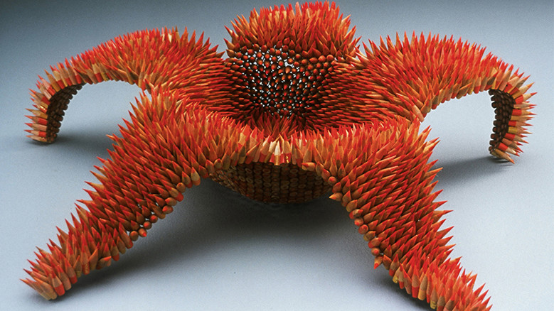

idea

Jennifer Maestre
http://www.jennifermaestre.com/-どんな人
南アフリカのヨハネスブルク出身のアーティストです。色鉛筆をつなぎ合わせて、イソギンチャクやウミウシ、熱帯地方の花などをモチーフにした色鮮やかな彫刻作品を多く作っています。
-解説
短く切断した色鉛筆を縫い合わせて一つの形を作っています。色えんぴつの色をよく見ると、赤だけではなく、橙や黄色などが混ざっていて、鮮やかな色合いが生まれています。先の尖った色えんぴつが集合することで、トゲトゲしつつ柔らかそうな表情が生まれ、不思議な質感をもった彫刻作品になっています。
-好きなところ
色えんぴつで「描く」アートではなく、色えんぴつ自体を「つなげる」アート、という独特な発想が好きです。既存の使い方にとらわれない発想も大切だと思いました。